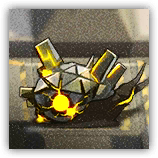
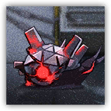

酸液源石虫Acid Originium Slug
远程 物理；普通 感染生物
|
 |
野生的被感染生物。会使用分泌物腐蚀作战人员防护设备。这种低智能生物极有可能会被敌方术师操纵，以进入人工设施内发动集群攻击。 |
酸液源石虫丨Acid Originium Slug
小型野兽（感染生物），无阵营
| AC 10 | 先攻 +0（10） |
| HP 14（4d6） | |
| 速度 20 尺，掘地5尺，攀爬5尺 | |
| 调整 | 豁免 | 调整 | 豁免 | 调整 | 豁免 | |||||||||
|---|---|---|---|---|---|---|---|---|---|---|---|---|---|---|
| 力量 | 6 | -2 | -2 | 敏捷 | 11 | +0 | +2 | 体质 | 11 | +0 | +2 | |||
| 智力 | 1 | -5 | -5 | 感知 | 6 | -2 | -2 | 魅力 | 6 | -2 | -2 |
| 技能 察觉+0，隐匿+2 |
| 免疫 毒素；中毒 |
| 感官 颤动感知30尺，被动察觉10 |
| 语言 无 |
| CR 1/2（XP100；PB +2） |
特质Traits
敏锐嗅觉Keen Smell。源石虫在依赖嗅觉的感知（观察）检定上具有优势。
集群战术Pack Tactics。若源石虫的攻击目标生物周围5尺范围内存在有至少一个未失能的盟友，则源石虫对该生物进行的攻击检定具有优势。
掘进者Tunneler。源石虫能以一半的速度在坚硬的岩石中挖掘，并留下一条直径2英尺的隧道。
动作Actions
酸液喷溅Acid Splash。远程或远程攻击检定：+3，触及5尺或射程20尺。命中：7（2d6）强酸伤害且目标AC降低1点（至多降至10），持续1分钟。
酸液源石虫 α Acid Originium Slug α
远程 物理；普通 感染生物
|
 |
野生的被感染生物。比一般酸液源石虫更具有威胁。且会使用分泌物腐蚀作战人员防护设备。这种低智能生物极有可能会被敌方术师操纵，以进入人工设施内发动集群攻击。 |
酸液源石虫 α丨Acid Originium Slug α
小型野兽（感染生物），无阵营
| AC 11 | 先攻 +3（13） |
| HP 22（5d6+5） | |
| 速度 20 尺，掘地5尺，攀爬5尺 | |
| 调整 | 豁免 | 调整 | 豁免 | 调整 | 豁免 | |||||||||
|---|---|---|---|---|---|---|---|---|---|---|---|---|---|---|
| 力量 | 6 | -2 | -2 | 敏捷 | 12 | +1 | +3 | 体质 | 12 | +1 | +3 | |||
| 智力 | 2 | -4 | -4 | 感知 | 7 | -2 | -2 | 魅力 | 6 | -2 | -2 |
| 技能 察觉+0，隐匿+3 |
| 免疫 毒素；中毒 |
| 感官 盲视10尺，被动察觉10 |
| 语言 无 |
| CR 1（XP200；PB +2） |
特质Traits
敏锐嗅觉Keen Smell。源石虫在依赖嗅觉的感知（观察）检定上具有优势。
集群战术Pack Tactics。若源石虫的攻击目标生物周围5尺范围内存在有至少一个未失能的盟友，则源石虫对该生物进行的攻击检定具有优势。
掘进者Tunneler。源石虫能以一半的速度在坚硬的岩石中挖掘，并留下一条直径2英尺的隧道。
动作Actions
多重攻击Multiattack（充能5-6）。酸液源石虫α发动两次酸液喷溅。
酸液喷溅Acid Splash。远程或远程攻击检定：+3，触及5尺或射程20尺。命中：7（2d6）强酸伤害且目标AC降低1点（至多降至10），持续1分钟。